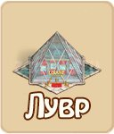

Получено: файл; исходный URL. Первая иллюстрация строки каталога; авторство не подтверждено. Идентичность изображения при замене домена не проверена. Страница: источник.
Лувр
браузерная версия; платформа и дата редакции не установлены- Тип
- Постройка
- Версия и дата
- браузерная версия; платформа и дата редакции не установлены
Данные по источнику · браузерная версия; платформа не установлена · дата редакции списка не установлена
Предварительно: Прочитан список. Имена файлов пиктограмм приводятся как есть: они не гарантируют идентификацию материала. Alt-атрибуты источника содержат ошибки. Отдельная статья и дата не проверены.. Требуется сверка.
- Сведения из списка, включая имена файлов пиктограмм
- [рисунок: luvr.png] Доступен на: 25 ур. Стоимость: 50 Зб Стадии строительства: 1. 20 [рисунок: Bloki.png] + 30 [рисунок: Metall.png] + 10 [рисунок: belyj-mramor.png] 2. 20 [рисунок: Provoloka.png] + 25 [рисунок: Mramor.png] + 25 [рисунок: Brevna_pal-my.jpg] 3. 06 [рисунок: kanaty.png] + 15 [рисунок: steklo.png] + 05 [рисунок: Skotch.png] Производит: 1. 1 лыжник = 10 [рисунок: Snegok.png] + 50 пряник 2. 1 Снежный паравоз = 20 [рисунок: Snegok.png] + 30 пряник 3. 1 Малый снежок = 01 [рисунок: Snegok.png] + 05 пряник 4. 1 Большой снежок = 03 [рисунок: Snegok.png] + 10 пряник


Данные по источнику · браузерная игра; платформа страницы не уточнена · 11.01.2014 — публикация; редакция неизвестна
Предварительно: Прочитана конкретная строка; старые сведения, у источника встречаются опечатки. Независимость от других сайтов не доказана.. Требуется сверка.
- Стадии по Zommbie
- 1: 20 блоков + 30 металла + 10 белого мрамора; 2: 20 проволоки + 25 мрамора + 25 брёвен пальмы; 3: 6 канатов + 15 стекла + 5 скотча.
- Возможности и рецепты по Zommbie
- Лыжник = 10 снежков + 50 пряников; снежный паровоз = 20 снежков + 30 пряников; малый снежок = 1 снежок + 5 пряников; большой снежок = 3 снежка + 10 пряников.
Данные по источнику · историческая браузерная игра, площадка не указана · 05.05.2012 — дата публикации; дата редакции неизвестна
Предварительно: Сопоставлено по единственному точному названию; различные версии или одноимённые объекты могут различаться. Названия файлов и alt пиктограмм сохранены как подписи, не заменяют проверенную расшифровку; изображения и цены требуют ручной сверки. Независимость от zombi-ferma.ru и других сайтов не установлена.. Требуется сверка.
- Текст и пиктограммы источника
- [изображение: m_louvre.png] Доступен на: 25 ур. Стоимость: 50 Зб Стадии строительства: 1. 20 [изображение: Bloki.png] + 30 [изображение: Metall.png] + 10 [изображение: belyj-mramor.png] 2. 20 [изображение: Provoloka.png] + 25 [изображение: Mramor.png] + 25 [изображение: Brevna_palmy.png] 3. 06 [изображение: kanaty.png] + 15 [изображение: Steklo.png] + 05 [изображение: Skotch.png] Производит: 1. 1 лыжник = 10 [изображение: Snegok.png] + 50 пряник 2. 1 Снежный паравоз = 20 [изображение: Snegok.png] + 30 пряник 3. 1 Малый снежок = 01 [изображение: Snegok.png] + 05 пряник 4. 1 Большой снежок = 03 [изображение: Snegok.png] + 10 пряник
Связанные сущности
нет проверенных связей — требуется сверка.